<title>Eagle Canyon Flights</title>
<meta name="claude:viewport-fit-sides" content="cover">
<link rel="stylesheet" href="https://fonts.googleapis.com/css2?family=Fraunces:opsz,wght@9..144,600&family=Inter:wght@400;600&display=swap">
<style>
/* layout: one reading column; the haze question breaks out into a wide 3-column picture grid */
:root {
  --bg: #f6f1ea; --fg: #2a1d16; --muted: #6d5c50; --card: #fffaf3; --line: #e2d5c6; --accent: #b4532a; --accent-fg: #fff;
  --display: "Fraunces", Georgia, serif; --text: "Inter", system-ui, sans-serif;
}
@media (prefers-color-scheme: dark) { :root:not([data-theme="light"]) { --bg: #1b1411; --fg: #f1e6db; --muted: #b9a596; --card: #251c17; --line: #3d2f27; --accent: #e07a48; --accent-fg: #1b1411; color-scheme: dark } }
:root[data-theme="dark"] { --bg: #1b1411; --fg: #f1e6db; --muted: #b9a596; --card: #251c17; --line: #3d2f27; --accent: #e07a48; --accent-fg: #1b1411; color-scheme: dark }
body { background: var(--bg); color: var(--fg); font: 16px/1.55 var(--text); }
main { max-width: 1180px; margin: 0 auto; padding-block: 32px 64px; padding-left: max(16px, env(safe-area-inset-left, 0px)); padding-right: max(16px, env(safe-area-inset-right, 0px)); display: grid; gap: 40px; }
.col { max-width: 68ch; }
h1, h2 { font-family: var(--display); font-weight: 600; text-wrap: balance; margin: 0; line-height: 1.15; }
h1 { font-size: clamp(30px, 5vw, 46px); }
h2 { font-size: 24px; }
p { margin: 0; }
.stack { display: grid; gap: 12px; }
.lede { color: var(--muted); font-size: 17px; }
code, .path { font: 14px/1.4 ui-monospace, Menlo, monospace; background: var(--card); border: 1px solid var(--line); border-radius: 6px; padding: 2px 6px; user-select: all; overflow-wrap: anywhere; }
.hero { width: 100%; border-radius: 10px; display: block; }
.grid { display: grid; grid-template-columns: auto repeat(3, minmax(0, 1fr)); gap: 8px; align-items: center; overflow-x: auto; }
.grid img { width: 100%; border-radius: 6px; display: block; }
.grid .h { font-weight: 600; text-align: center; font-size: 14px; }
.grid .r { font-size: 13px; color: var(--muted); writing-mode: vertical-rl; transform: rotate(180deg); text-align: center; }
.choices { display: flex; flex-wrap: wrap; gap: 8px; }
.choices label { display: flex; align-items: center; gap: 8px; padding: 8px 14px; border: 1px solid var(--line); border-radius: 999px; background: var(--card); cursor: pointer; }
.choices input { accent-color: var(--accent); }
.choices label:has(input:checked) { border-color: var(--accent); box-shadow: inset 0 0 0 1px var(--accent); }
.rec { font-size: 12px; letter-spacing: .06em; text-transform: uppercase; color: var(--accent); font-weight: 600; }
textarea { width: 100%; min-height: 64px; box-sizing: border-box; font: inherit; padding: 10px; border-radius: 8px; border: 1px solid var(--line); background: var(--card); color: var(--fg); }
button { font: 600 16px var(--text); padding: 12px 22px; border-radius: 8px; border: 0; background: var(--accent); color: var(--accent-fg); cursor: pointer; justify-self: start; }
button:focus-visible, input:focus-visible, textarea:focus-visible { outline: 3px solid var(--accent); outline-offset: 2px; }
#status { color: var(--muted); font-size: 14px; }
table { border-collapse: collapse; font-size: 14px; font-variant-numeric: tabular-nums; min-width: 560px; }
td, th { text-align: left; padding: 6px 10px; border-bottom: 1px solid var(--line); vertical-align: top; }
.scroll { overflow-x: auto; }
.pass { color: #2f7d3b; font-weight: 600; } .fail { color: #b3261e; font-weight: 600; }
:root[data-theme="dark"] .pass, .pass { }
.places { display: grid; grid-template-columns: repeat(auto-fill, minmax(260px, 1fr)); gap: 14px; }
.places figure { margin: 0; display: grid; gap: 6px; }
.places img { width: 100%; border-radius: 8px; display: block; aspect-ratio: 16 / 9; object-fit: cover; }
.places figcaption { font-size: 14px; color: var(--muted); }
.places figcaption b { color: var(--fg); }
.pairs { display: grid; gap: 18px; }
.pair { display: grid; grid-template-columns: 1fr 1fr; gap: 8px; margin: 0; }
.pair img { width: 100%; border-radius: 8px; display: block; aspect-ratio: 16 / 9; object-fit: cover; }
.pair span { font-size: 12px; letter-spacing: .06em; text-transform: uppercase; color: var(--muted); font-weight: 600; }
.pair div { display: grid; gap: 4px; }
.pair figcaption { grid-column: 1 / -1; font-size: 14px; color: var(--muted); }
.pair figcaption b { color: var(--fg); }
@media (max-width: 640px) { .pair { grid-template-columns: 1fr; } }
details { border-top: 1px solid var(--line); padding-top: 20px; }
summary { cursor: pointer; font-family: var(--display); font-size: 22px; font-weight: 600; }
.q { display: grid; gap: 14px; padding-top: 24px; border-top: 1px solid var(--line); }
@media (max-width: 640px) { .grid { grid-template-columns: repeat(3, minmax(120px, 1fr)); } .grid .r, .grid .corner { display: none; } }
</style>

<main>
  <section class="stack col">
    <h1>Eagle Canyon, third flight</h1>
    <p class="lede">You asked for much more resolution. The rock, the ground and the trees now carry fine detail that holds when you fly right up to them, the sun's shadows have a clean edge, and the game draws every pixel of this MacBook's screen. It also runs lighter than before. One question below.</p>
  </section>

  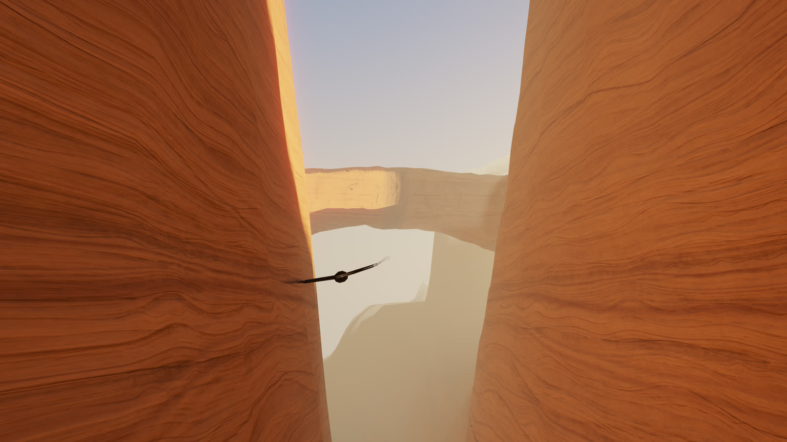

  <section class="stack col">
    <h2>How to try it</h2>
    <p>Open this file in Chrome: <span class="path">~/Documents/eagle-canyon/index.html</span>, then click Fly.</p>
    <p>Same controls. Keys <b>1</b> to <b>8</b> jump to the places. To judge the detail, fly close along a wall, low over the forest floor on the high rim (key 7), and through the slot (key 2).</p>
  </section>

  <section class="stack">
    <div class="col stack"><h2>Before and after, up close</h2><p>The same spots in the last version and in this one. These are cut from the game at full size, not shrunk.</p></div>
    <div class="pairs">
      <figure class="pair"><div><span>Before</span>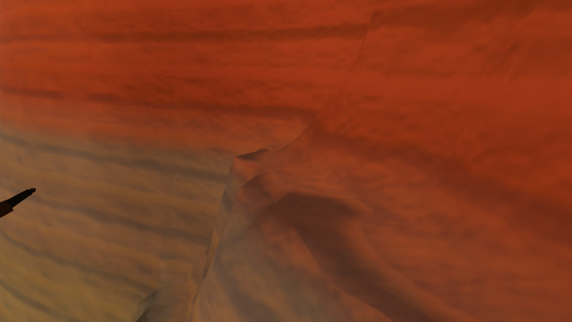</div><div><span>After</span>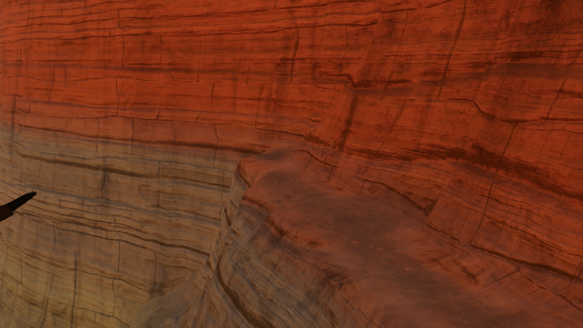</div><figcaption><b>A canyon wall.</b> Thin strata, ledges and joints where there were soft bands.</figcaption></figure>
      <figure class="pair"><div><span>Before</span>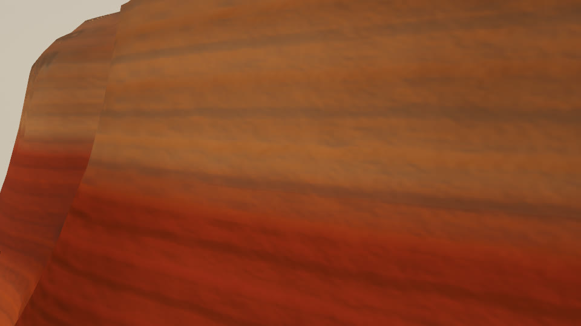</div><div><span>After</span>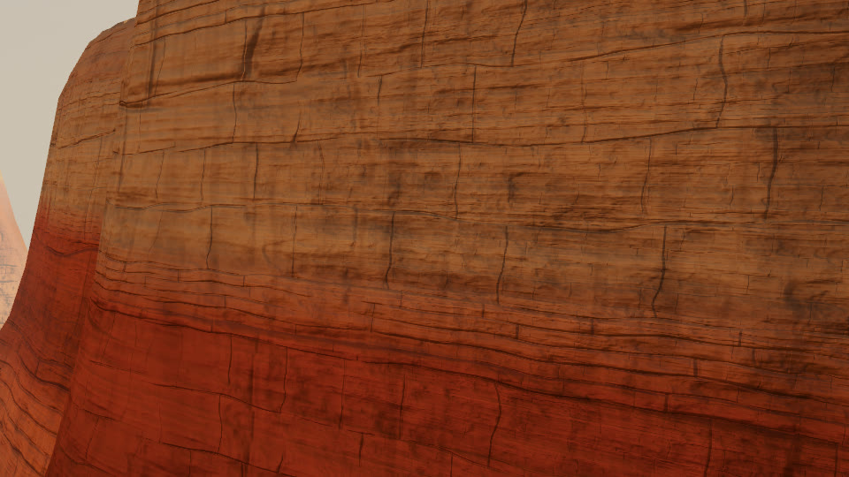</div><figcaption><b>A cliff in the basin.</b> Beds broken into blocks.</figcaption></figure>
      <figure class="pair"><div><span>Before</span>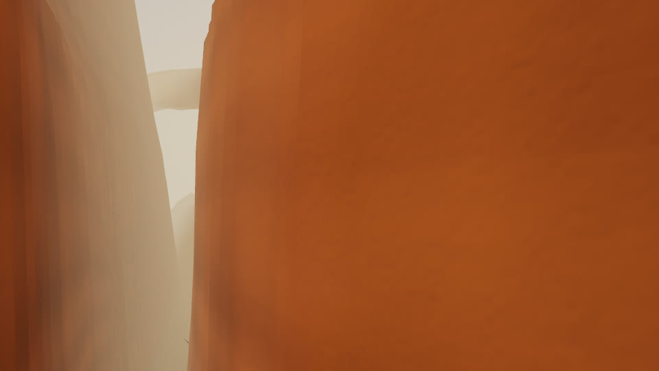</div><div><span>After</span>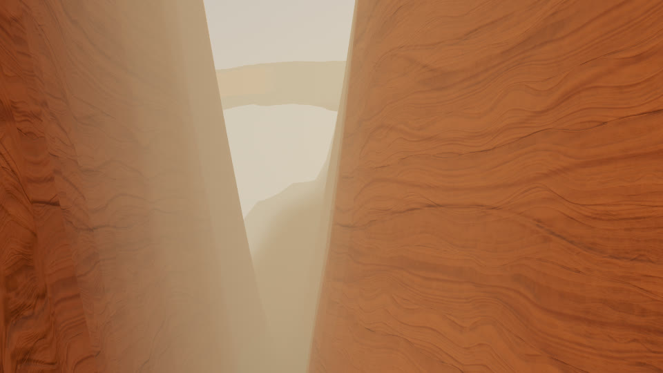</div><figcaption><b>The slot.</b> Thin sandstone layers that flow along the wall. The walls themselves are smoother too: the stair-steps are gone.</figcaption></figure>
      <figure class="pair"><div><span>Before</span></div><div><span>After</span>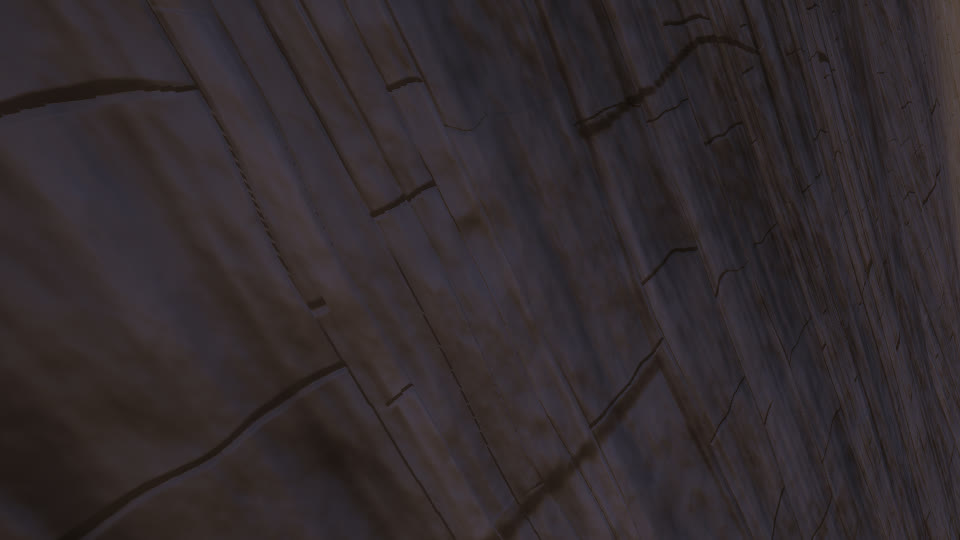</div><figcaption><b>The gorge.</b> Grey rock with slanting layers, where it was flat dark brown.</figcaption></figure>
      <figure class="pair"><div><span>Before</span>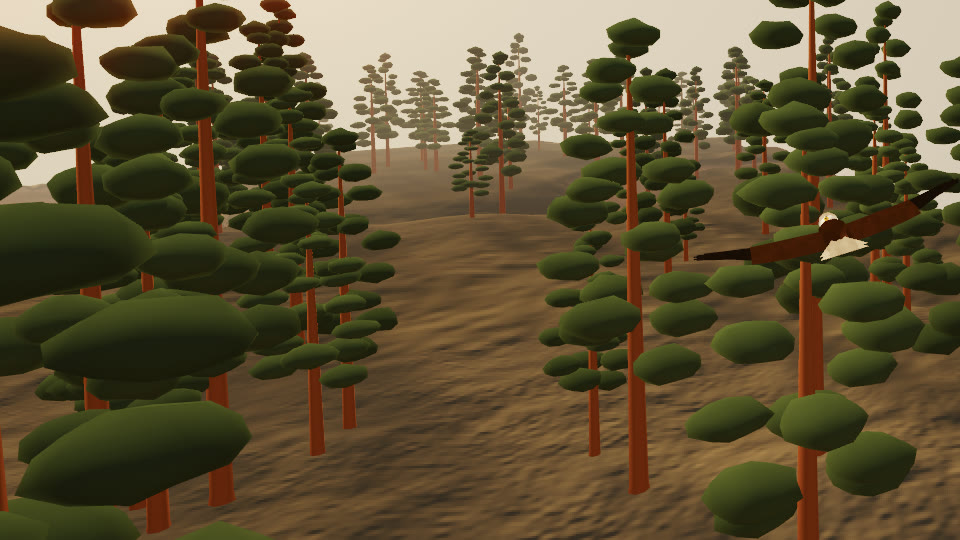</div><div><span>After</span>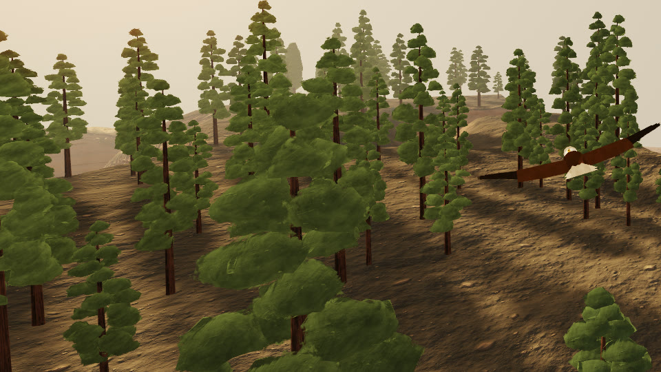</div><figcaption><b>The pine forest.</b> Needles, bark and stony ground.</figcaption></figure>
    </div>
  </section>

  <section class="stack">
    <div class="col stack"><h2>The places now</h2><p>New stills, each with its key.</p></div>
    <div class="places">
      <figure>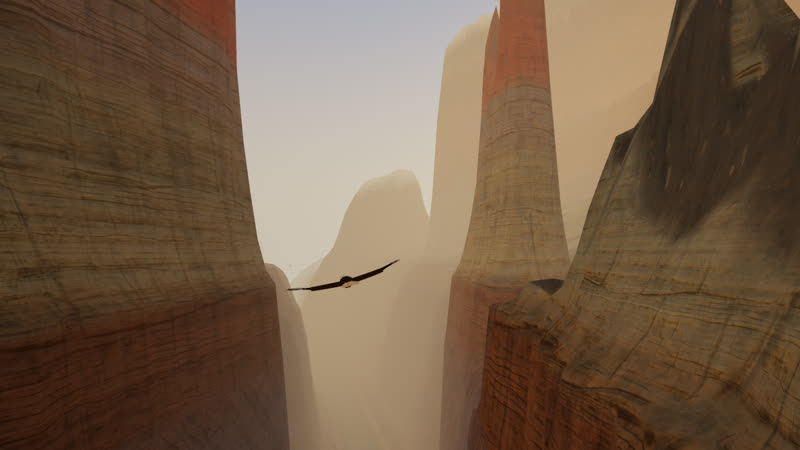<figcaption><b>1 · The canyon.</b> Layered walls, buttes, side canyons.</figcaption></figure>
      <figure><figcaption><b>2 · The narrows.</b> A slot 330 m deep.</figcaption></figure>
      <figure>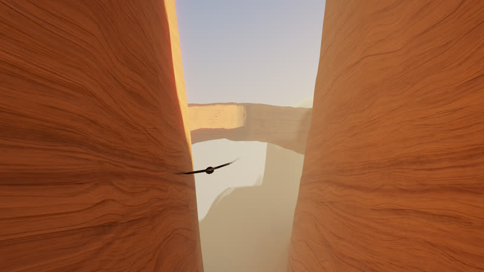<figcaption><b>3 · The stone bridge.</b> Fly under it or over it.</figcaption></figure>
      <figure>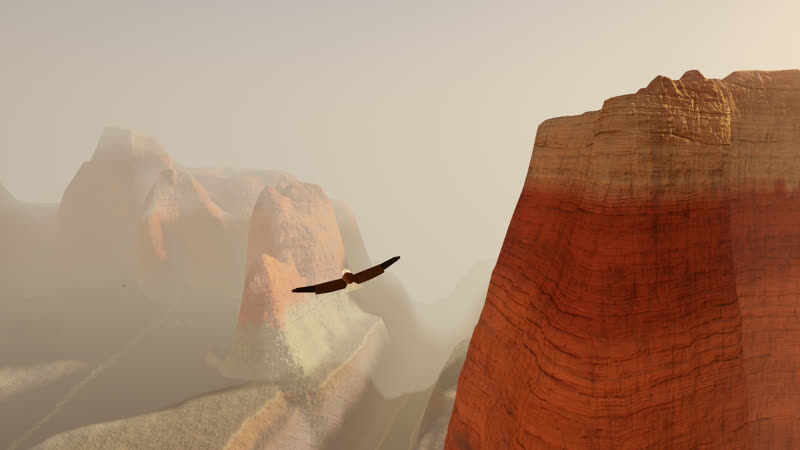<figcaption><b>4 · The basin.</b> More than 2 km across.</figcaption></figure>
      <figure><figcaption><b>5 · The gorge.</b> Rapids and boulders. The river now widens and narrows.</figcaption></figure>
      <figure>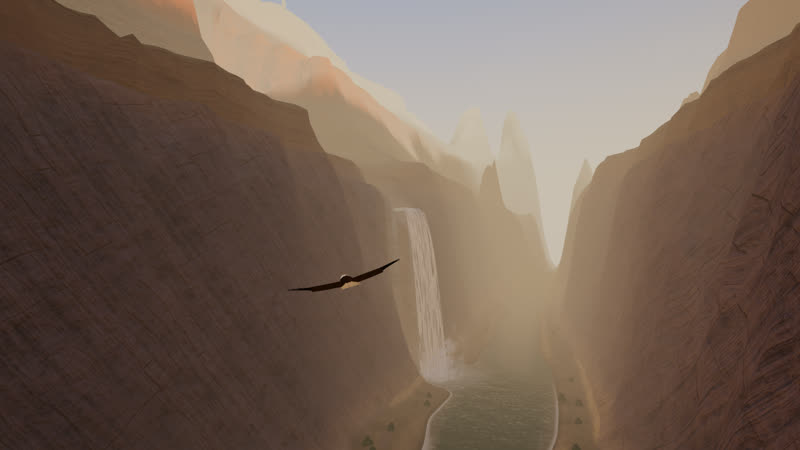<figcaption><b>6 · The waterfall.</b></figcaption></figure>
      <figure>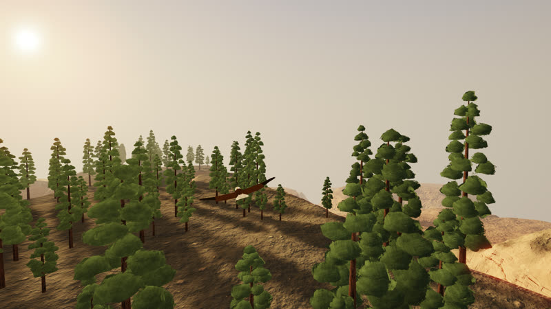<figcaption><b>7 · The high rim.</b> The pine forest.</figcaption></figure>
      <figure>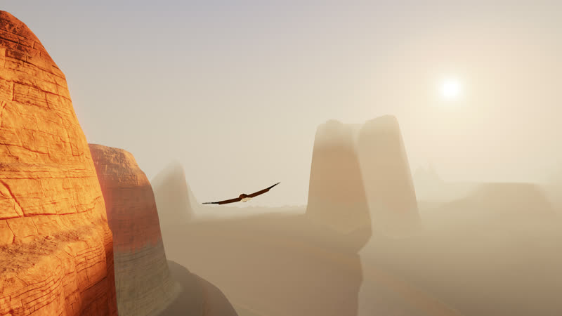<figcaption><b>8 · Into the sun.</b> Past a sunlit cliff in the basin.</figcaption></figure>
    </div>
  </section>

  <section class="q col" id="q-sharp">
    <h2>Is this the resolution you meant?</h2>
    <p>"More resolution" can mean finer detail on things, or a crisper picture overall. This run did both, but mostly the first. Fly for a few minutes, close to walls and far from them, then pick.</p>
    <div class="choices" role="radiogroup" aria-label="Is this the resolution you meant">
      <label><input type="radio" name="sharp" id="sharp-yes" value="yes"> Yes, this is it</label>
      <label><input type="radio" name="sharp" id="sharp-more" value="more"> Better, but I want more</label>
      <label><input type="radio" name="sharp" id="sharp-other" value="other"> I meant something else</label>
    </div>
    <textarea id="sharp-note" placeholder="Where does it still look soft or wrong? Or what did you mean? (optional)"></textarea>
    <button id="save" type="button">Save my answer</button>
    <p id="status" aria-live="polite">Loading saved answer…</p>
  </section>

  <section class="q" id="numbers">
    <div class="col stack">
      <h2>What we measured</h2>
      <p>Predictions written before building, measured on this MacBook in Chrome with the haze at 600 m. The last version was timed again in the same session, so the two can be compared.</p>
    </div>
    <div class="scroll"><table>
<thead><tr><th>#</th><th>Prediction</th><th>Measured</th><th>Result</th></tr></thead>
<tbody>
<tr><td>S1</td><td>Full 1080p: 60 fps, GPU 12 ms or less, and no slower than the last version</td><td>60 fps; GPU 10.4 and 9.9 ms. The last version in the same session: 12.6 and 12.4 ms. So about 2 ms lighter</td><td class="pass">Pass</td></tr>
<tr><td>S2</td><td>This MacBook's own screen (2560×1600), every pixel: 60 fps, and the game stays at 100% of the screen</td><td>60 fps; GPU 12.5 and 11.8 ms; it stayed at 100% in every test flight. The last version capped itself at 90% and often sat at 66%</td><td class="pass">Pass</td></tr>
<tr><td>S3</td><td>A fine-detail score of 2.0 or more on eight close-ups (it was 0.78), and 1.3 or more on the eight places (it was 0.85)</td><td>Close-ups 1.76; places 1.87</td><td class="fail">Miss on the close-ups</td></tr>
<tr><td>S4</td><td>A reviewer shown eight before/after pairs with the sides shuffled picks the new one as sharper in 7 or more</td><td>8 of 8, twice, with two different reviewers</td><td class="pass">Pass</td></tr>
<tr><td>S5</td><td>The file stays 300 KB or less</td><td>84 KB (33 KB zipped)</td><td class="pass">Pass</td></tr>
<tr><td>S6</td><td>Memory within the same limit as before, menu within 5 s</td><td>656 MB against a limit of 850; the menu appears after 2.5 s</td><td class="pass">Pass</td></tr>
<tr><td>S7</td><td>An image reviewer finds nothing worse than "minor"</td><td>After five rounds: nothing broken, but 10 "moderate" flaws. They have changed in kind. Before, they were about blur. Now most are about the new detail looking drawn or built (rock joints like masonry, the slot like polished wood) and about shapes (the bridge is a beam, the pines are stacked blobs)</td><td class="fail">Miss</td></tr>
</tbody></table></div>
  </section>

  <details>
    <summary>Second flight (your answer is kept)</summary>
    <div class="stack col" style="margin-top:16px">
      <p>The world became four times bigger with a slot, a stone bridge, a basin, a gorge, a waterfall and a pine forest. Keep flying: you gave it 4 of 5 (it was 3), which met the prediction.</p>
      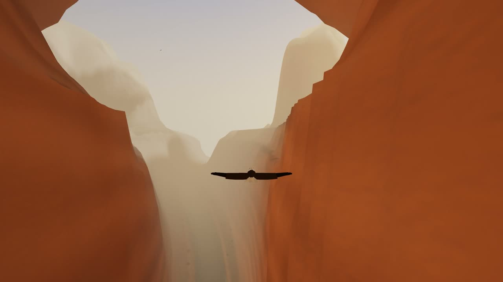
    </div>
  </details>
  <details>
    <summary>First flight (your answers are kept)</summary>
    <div class="stack col" style="margin-top:16px">
      <p>Haze: you picked 600 m, now the default. Keep flying: 3 of 5 ("I need more diversity in my terrain"). What exploring should give next: all five ideas (places that fill in a map, a nest, riding the air, fishing, time of day). Those wait for later runs.</p>
      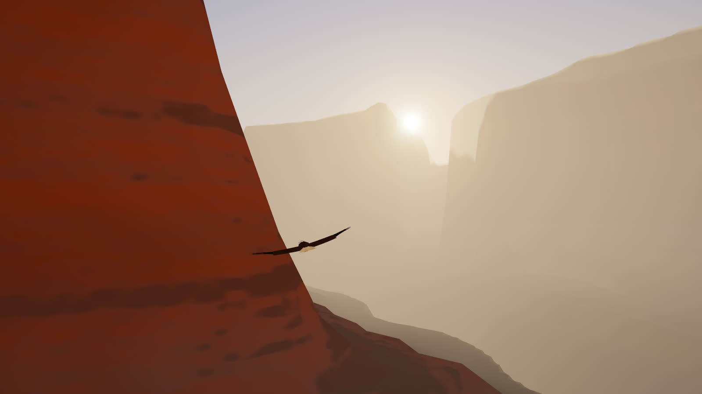
    </div>
  </details>
</main>

<script>
// run 3 saves to its own doc; earlier answers stay in answers/eagle-1 and answers/eagle-2
const DOC = 'answers/eagle-3';
const $ = (id) => document.getElementById(id);
const status = $('status');
let db = null;
function read() {
  const k = document.querySelector('input[name="sharp"]:checked');
  return { sharp: k ? k.value : null, sharpNote: $('sharp-note').value };
}
function fill(a) {
  if (!a) return;
  if (a.sharp) { const i = $('sharp-' + a.sharp); if (i) i.checked = true; }
  $('sharp-note').value = a.sharpNote || '';
}
(async () => {
  const timer = setTimeout(() => { if (!db) status.textContent = 'Saving is not available in this view. You can still read the page.'; }, 10000);
  db = await window.claude?.use?.('db');
  clearTimeout(timer);
  if (!db) { status.textContent = 'Saving is not available in this view. You can still read the page.'; $('save').disabled = true; return; }
  try { const s = await db.doc(DOC).get(); if (s && s.exists) { fill(s.data()); status.textContent = 'Your saved answer is filled in.'; } else status.textContent = 'Nothing saved yet.'; }
  catch { status.textContent = 'Could not load your saved answer.'; }
})();
$('save').addEventListener('click', async () => {
  if (!db) return;
  status.textContent = 'Saving…';
  try { await db.doc(DOC).set({ ...read(), savedAt: new Date().toISOString() }); status.textContent = 'Saved.'; }
  catch (e) { status.textContent = 'Could not save: ' + (e && e.message || 'unknown error') + '. Try again.'; }
});
</script>
